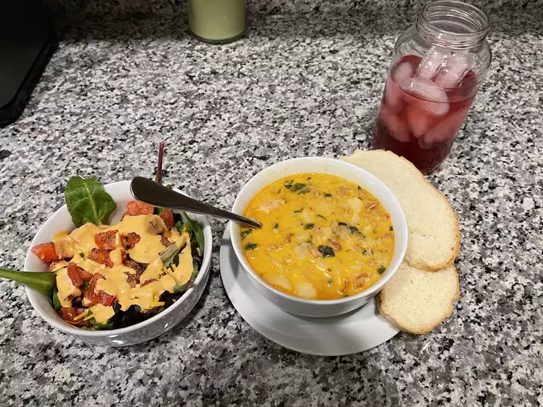

Zuppa Toscana
Zuppa Toscana Recipe

A nice bowl for any occassion.
This is one of my favorite recipes for dinner as
you will always have some left over for lunch the
next day. If you have the time, I highly recommend
trying it out. I promise that you won't regret it.
- 1 pound bulk mild Italian sausage
- 1 1/4 teaspoons crushed red pepper flakes
- 4 slices bacon, cut into 1/2 inch pieces
- 1 large onion, diced
- 5 (13.75 oz) cans chicken broth
- 6 potatoes, thinly sliced
- 1 cup heavy cream
- 1/4 bunch fresh spinach, tough stems removed
So, in order to make this recipe you will want to follow these steps carefully.
- Cook the Italian sausage and red pepper flakes in a Duch oven over
medium-high heat until crumbly, browned, and no longer pink, 10 to 15
minutes. Drain and set aside.
- Cook the bacon in the same Dutch oven over medium heat until crisp,
about 10 minutes. Drain, leaving a few tablespoons of drippings with
the bacon in the bottom of the Dutch oven. Stir in the onions and garlic;
cook until onions are soft and translucent, about 5 minutes.
- Pour the chicken broth into the Dutch oven with the bacon and onion
mixture; bring to a boil over high heat. Add the potatoes, and boil until
fork tender, about 20 minutes. Reduce the heat to medium and stir in
the heavy cream and the cooked sausage; heat through. mix the spinach
into the soup just before serving.